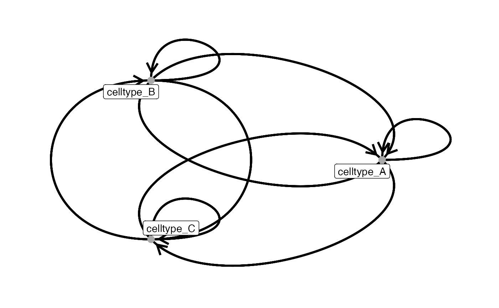
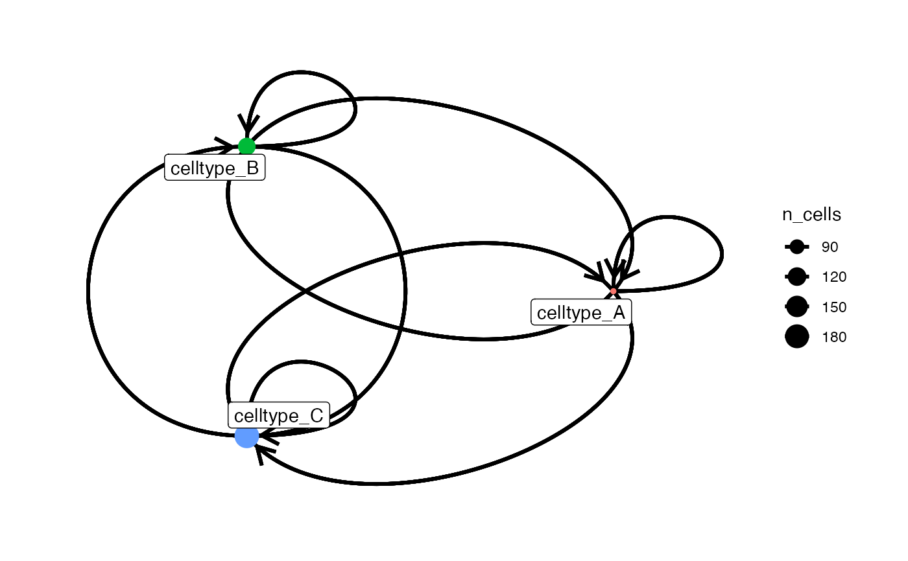
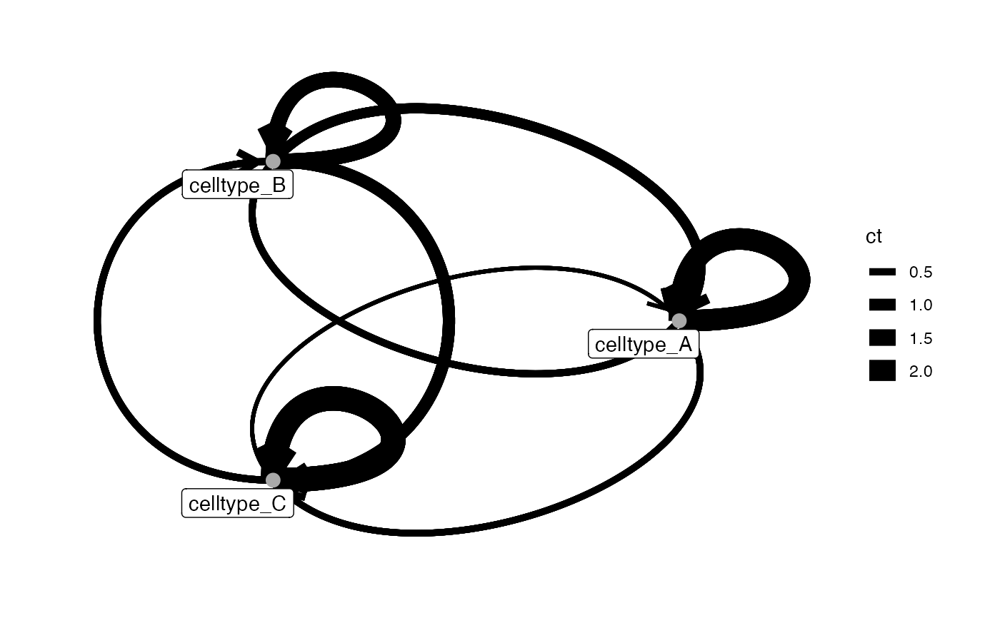

Function to plot directed interaction graphs based on symbolic edge-lists and vertex metadata. The user can specify node, node_label and edge aesthetics using dedicated arguments. The resulting plot can be further refined with `ggplot2` for node styling and `ggraph` for edge-specific customization.
plotInteractions(
out,
object,
label,
group_by,
node_color_by = NULL,
node_size_by = NULL,
node_color_fix = NULL,
node_size_fix = NULL,
node_label_repel = TRUE,
node_label_color_by = NULL,
node_label_color_fix = NULL,
edge_color_by = NULL,
edge_color_fix = NULL,
edge_width_by = NULL,
edge_width_fix = NULL,
draw_edges = TRUE,
return_data = FALSE,
graph_layout = "circle"
)a data frame, usually the output from countInteractions or
testInteractions, representing an edge list with columns "group_by",
"from_label" and "to_label". Additional columns may be included to specify
edge attributes (weight or color).
a SingleCellExperiment or SpatialExperiment
object.
single character specifying the colData(object) entry
which stores the cell labels. These can be cell-types labels or other
metadata entries.
a single character indicating the colData(object)
entry by which interactions are grouped. This is usually the image or patient ID.
a single character indicating the colData(object)
single character either
NULL, "name","n_cells", "n_group" by which the nodes should be
colored.
single character either NULL, "n_cells","n_group"
by which the size of the nodes are defined.
single character specifying the color of all nodes.
single numeric specifying the size of all nodes.
should nodes be labelled? Defaults to TRUE.
single character either
NULL, "name","n_cells","n_group" by which the node labels should be
colored.
single character specifying the color of all node labels.
single character indicating the name of the column of "out"
used represent edge colors. This column is usually newly added by the user and must assign a
unique value to each 'from_label'–'to_label' pair. Typically, these values could encode
the direction of significantly interacting cell type pairs.
single character specifying the color of all edges.
single character indicating the name of the column of "out"
used to scale edge widths. The values in this column are averaged for each
'from_label'–'to_label' pair. Typically, this could be the 'ct' column from
of "out" or a newly added column representing an interaction feature.
single numeric specifying the width of all edges.
should edges be drawn between nodes? Defaults to TRUE.
should the edge list and vertex metadata for graph
construction be returned as a list of two data.frames?
single character of
"circle", "chord", "linear", "fr", "kk", "drl", "stress", "graphopt",
"lgl", "tree", "sugiyama", "star", "nicely", "manual", "grid", "mds", "sphere",
"randomly", "gem", "dh" which defines the graph layout.
Defaults to "circle". For more information, see ggraph.
returns a ggplot object or a list of two
data.frames.
countInteractions for counting (but not testing) cell-cell
interactions per grouping level.
testInteractions for testing cell-cell
interactions per grouping level.
set.seed(22)
library(cytomapper)
library(BiocParallel)
data(pancreasSCE)
## 1. countInteractions or testInteractions
sce <- buildSpatialGraph(pancreasSCE, img_id = "ImageNb", type = "knn", k = 3)
#> The returned object is ordered by the 'ImageNb' entry.
count_out <- countInteractions(sce,
group_by = "ImageNb",
label = "CellType",
method = "classic", # choose from c("classic", "histocat", "patch", "interaction")
colPairName = "knn_interaction_graph")
test_out <- testInteractions(sce,
group_by = "ImageNb",
label = "CellType",
method = "classic", # choose from c("classic", "histocat", "patch", "interaction")
colPairName = "knn_interaction_graph",
iter = 100,
p_threshold = 0.5,
BPPARAM = SerialParam(RNGseed = 123))
## 2. Plot interactions
# default
plotInteractions(count_out, sce, "CellType", "ImageNb")

# adjust node aesthetics
plotInteractions(count_out, sce, "CellType", "ImageNb",
node_color_by = "name",
node_size_by = "n_cells")

# adjust edge aesthetics
plotInteractions(test_out, sce, "CellType", "ImageNb",
edge_width_by = "ct")

# Plot interactions - return data
plotInteractions(test_out, sce, "CellType", "ImageNb",
return_data = TRUE)
#> $edges
#> from_label to_label weight
#> 1 celltype_A celltype_A 1
#> 2 celltype_A celltype_B 1
#> 3 celltype_A celltype_C 1
#> 4 celltype_B celltype_A 1
#> 5 celltype_B celltype_B 1
#> 6 celltype_B celltype_C 1
#> 7 celltype_C celltype_A 1
#> 8 celltype_C celltype_B 1
#> 9 celltype_C celltype_C 1
#> 10 celltype_A celltype_A 1
#> 11 celltype_A celltype_B 1
#> 12 celltype_A celltype_C 1
#> 13 celltype_B celltype_A 1
#> 14 celltype_B celltype_B 1
#> 15 celltype_B celltype_C 1
#> 16 celltype_C celltype_A 1
#> 17 celltype_C celltype_B 1
#> 18 celltype_C celltype_C 1
#> 19 celltype_A celltype_A 1
#> 20 celltype_A celltype_B 1
#> 21 celltype_A celltype_C 1
#> 22 celltype_B celltype_A 1
#> 23 celltype_B celltype_B 1
#> 24 celltype_B celltype_C 1
#> 25 celltype_C celltype_A 1
#> 26 celltype_C celltype_B 1
#> 27 celltype_C celltype_C 1
#>
#> $vertices
#> CellType n_cells n_group
#> 1 celltype_A 62 2
#> 2 celltype_B 111 3
#> 3 celltype_C 189 3
#>